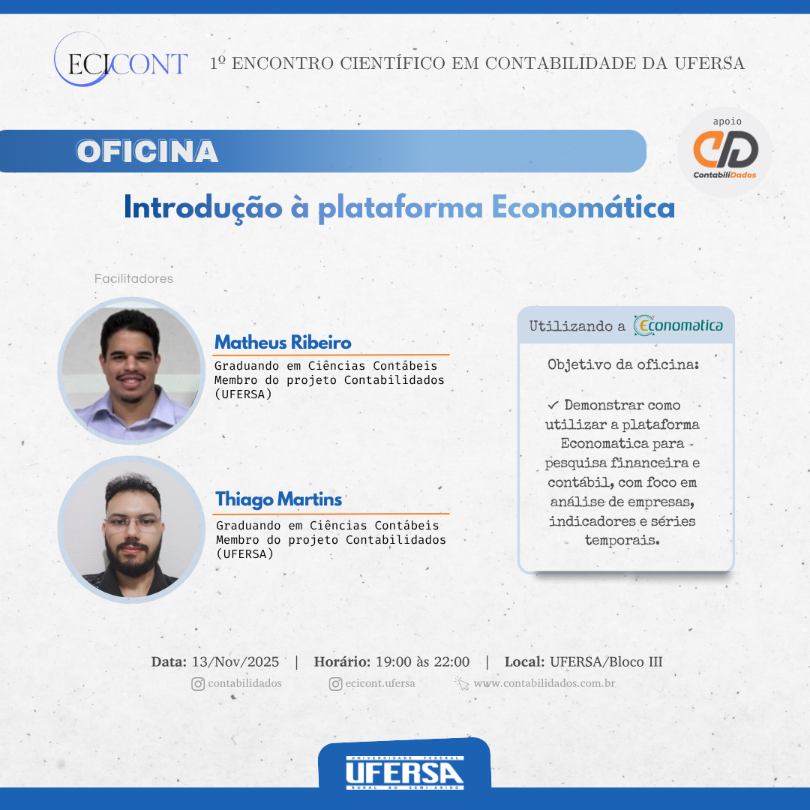
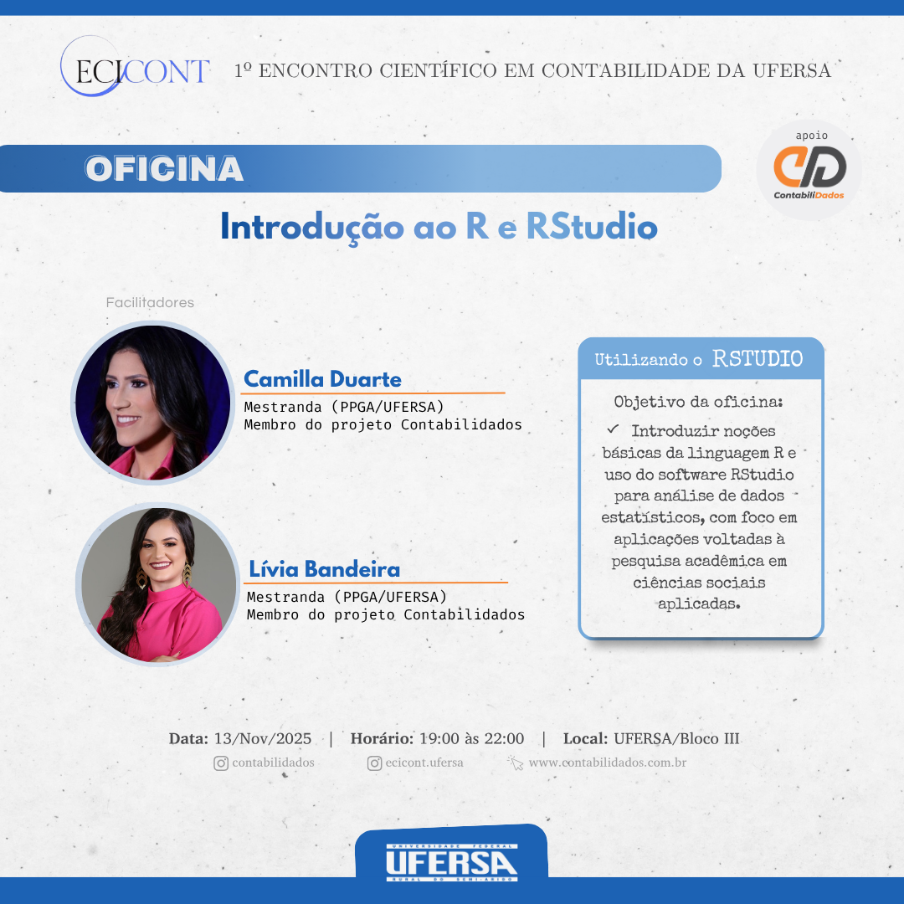
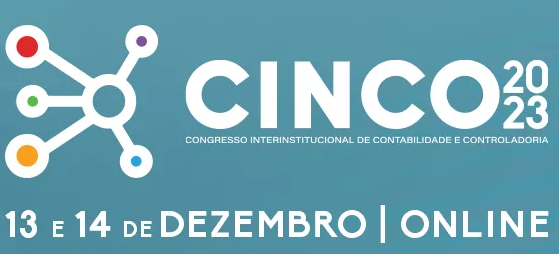
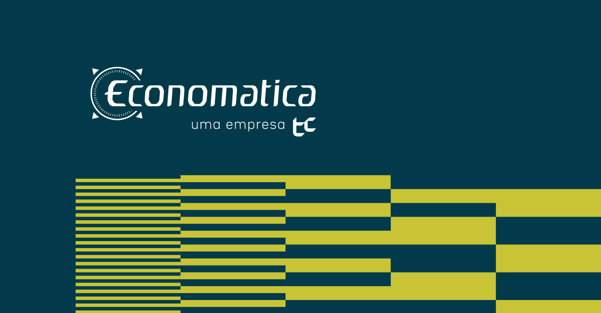

10/06/2026 - 19 às 21h · Educação Financeira para a Comunidade Acadêmica e Externa da UFERSA

27/11/2025 às 15h · Café com Especialistas

14/11/2025 - 19 às 21h · ECICONT - I Encontro Científico em Contabilidade da UFERSA

13/11/2025 - 19 às 22h · ECICONT - I Encontro Científico em Contabilidade da UFERSA

13/11/2025 - 19 às 22h · ECICONT - I Encontro Científico em Contabilidade da UFERSA
11/06/2024 · V Ciclo de Capacitação Metodológica do PPGA

14/12/2023 · CINCO - I Congresso Interinstitucional de Contabilidade e Controladoria
29/10/2022 · Análise de Dados com R e Economatica

29/10/2022 · Análise de Dados com R e Economatica
Nenhum item correspondente